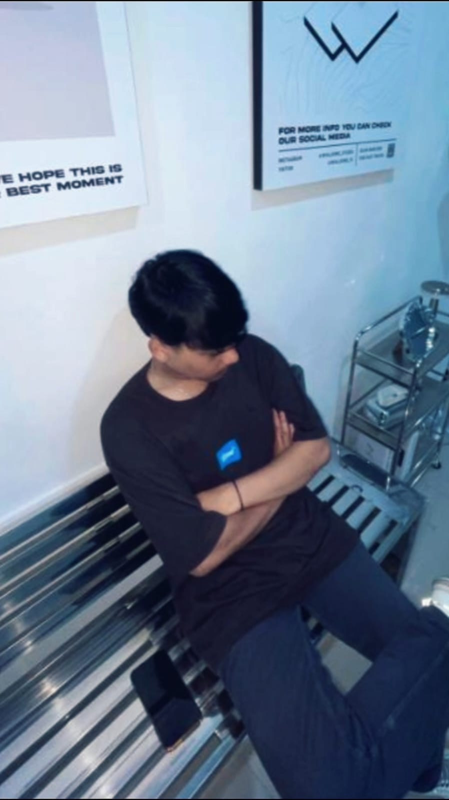
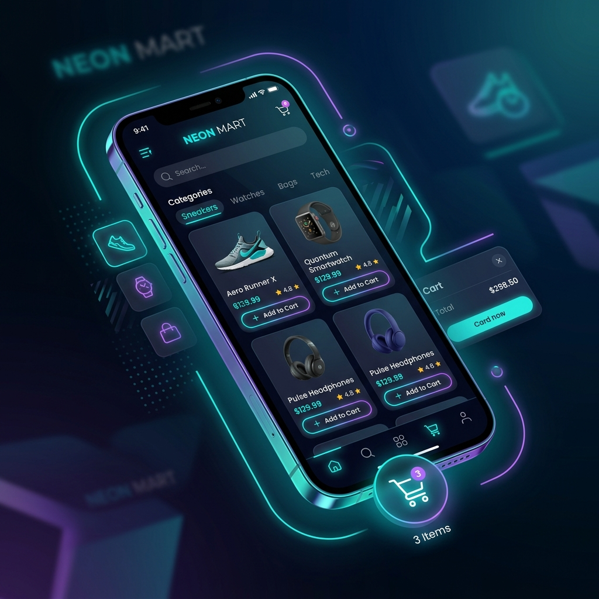

👋 Halo, Saya
Mahasiswa Teknik Informatika (Konsentrasi Rekayasa Perangkat Lunak) di Institut Teknologi Garut yang bersemangat membangun solusi digital modern dan efisien.

Halo! Saya Romy Zaenul Alam, mahasiswa Program Studi Teknik Informatika dengan konsentrasi Rekayasa Perangkat Lunak (RPL) di Institut Teknologi Garut. Saya berfokus pada pengembangan aplikasi mobile dan web, serta memiliki ketertarikan besar dalam merancang sistem yang efisien, memecahkan masalah logika, dan menulis kode yang bersih (clean code).
Saat ini, saya sedang mengembangkan aplikasi mobile manajemen warung untuk diimplementasikan pada usaha saya sendiri, sekaligus memiliki pengalaman membangun aplikasi e-commerce menggunakan Flutter. Saya sangat antusias mencari peluang Kerja Praktik (KP) atau magang untuk menerapkan ilmu saya di industri nyata dan memberikan kontribusi positif bagi divisi IT perusahaan Anda.
Teknologi Dikuasai
Sertifikat Profesional
Proyek Aplikasi

Aplikasi belanja online dengan fitur katalog produk, keranjang belanja, dan simulasi checkout. Dibangun sebagai implementasi nyata pada praktikum pemrograman mobile.
Aplikasi Point of Sale (POS) kustom yang dirancang untuk membantu manajemen inventaris, pencatatan transaksi harian, dan analisis penjualan untuk usaha warung pribadi.
Halaman profil responsif yang dibangun menggunakan Vanilla HTML & CSS. Proyek ini merupakan tugas akhir kelulusan kelas Dicoding.
Sertifikasi kelulusan kelas dari Dicoding Indonesia sebagai bukti kompetensi dan pembelajaran berkelanjutan.
Saya mencari kesempatan magang atau Kerja Praktik (KP) untuk menerapkan kemampuan IT saya. Jika Anda memiliki lowongan yang sesuai, mari terhubung!